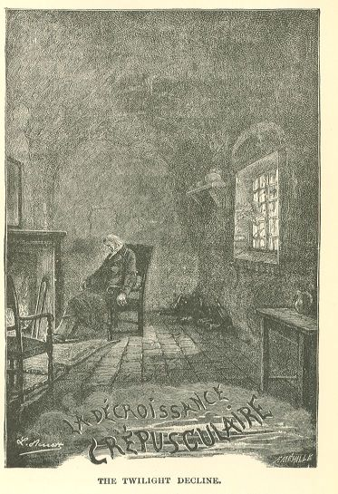

Les Misérables
CHAPTER II—THE OBSCURITIES WHICH A REVELATION CAN CONTAIN
Marius was quite upset.
The sort of estrangement which he had always felt towards the man beside whom he had
seen Cosette, was now explained to him. There was something enigmatic about that person,
of which his instinct had warned him.
This enigma was the most hideous of disgraces, the galleys. This M. Fauchelevent was
the convict Jean Valjean.
To abruptly find such a secret in the midst of one's happiness resembles the discovery
of a scorpion in a nest of turtledoves.
Was the happiness of Marius and Cosette thenceforth condemned to such a neighborhood?
Was this an accomplished fact? Did the acceptance of that man form a part of the marriage
now consummated? Was there nothing to be done?
Had Marius wedded the convict as well?
In vain may one be crowned with light and joy, in vain may one taste the grand purple
hour of life, happy love, such shocks would force even the archangel in his ecstasy,
even the demigod in his glory, to shudder.
As is always the case in changes of view of this nature, Marius asked himself whether
he had nothing with which to reproach himself. Had he been wanting in divination?
Had he been wanting in prudence? Had he involuntarily dulled his wits? A little, perhaps.
Had he entered upon this love affair, which had ended in his marriage to Cosette,
without taking sufficient precautions to throw light upon the surroundings? He admitted,—it
is thus, by a series of successive admissions of ourselves in regard to ourselves,
that life amends us, little by little,—he admitted the chimerical and visionary side
of his nature, a sort of internal cloud peculiar to many organizations, and which,
in paroxysms of passion and sorrow, dilates as the temperature of the soul changes,
and invades the entire man, to such a degree as to render him nothing more than a
conscience bathed in a mist. We have more than once indicated this characteristic
element of Marius' individuality.
He recalled that, in the intoxication of his love, in the Rue Plumet, during those
six or seven ecstatic weeks, he had not even spoke to Cosette of that drama in the
Gorbeau hovel, where the victim had taken up such a singular line of silence during
the struggle and the ensuing flight. How had it happened that he had not mentioned
this to Cosette? Yet it was so near and so terrible! How had it come to pass that
he had not even named the Thenardiers, and, particularly, on the day when he had encountered
Eponine? He now found it almost difficult to explain his silence of that time. Nevertheless,
he could account for it. He recalled his benumbed state, his intoxication with Cosette,
love absorbing everything, that catching away of each other into the ideal, and perhaps
also, like the imperceptible quantity of reason mingled with this violent and charming
state of the soul, a vague, dull instinct impelling him to conceal and abolish in
his memory that redoubtable adventure, contact with which he dreaded, in which he
did not wish to play any part, his agency in which he had kept secret, and in which
he could be neither narrator nor witness without being an accuser.
Moreover, these few weeks had been a flash of lightning; there had been no time for
anything except love.
In short, having weighed everything, turned everything over in his mind, examined
everything, whatever might have been the consequences if he had told Cosette about
the Gorbeau ambush, even if he had discovered that Jean Valjean was a convict, would
that have changed him, Marius? Would that have changed her, Cosette? Would he have
drawn back? Would he have adored her any the less? Would he have refrained from marrying
her? No. Then there was nothing to regret, nothing with which he need reproach himself.
All was well. There is a deity for those drunken men who are called lovers. Marius
blind, had followed the path which he would have chosen had he been in full possession
of his sight. Love had bandaged his eyes, in order to lead him whither? To paradise.
But this paradise was henceforth complicated with an infernal accompaniment.
Marius' ancient estrangement towards this man, towards this Fauchelevent who had turned
into Jean Valjean, was at present mingled with horror.
In this horror, let us state, there was some pity, and even a certain surprise.
This thief, this thief guilty of a second offence, had restored that deposit. And
what a deposit! Six hundred thousand francs.
He alone was in the secret of that deposit. He might have kept it all, he had restored
it all.
Moreover, he had himself revealed his situation. Nothing forced him to this. If any
one learned who he was, it was through himself. In this avowal there was something
more than acceptance of humiliation, there was acceptance of peril. For a condemned
man, a mask is not a mask, it is a shelter. A false name is security, and he had rejected
that false name. He, the galley-slave, might have hidden himself forever in an honest
family; he had withstood this temptation. And with what motive? Through a conscientious
scruple. He himself explained this with the irresistible accents of truth. In short,
whatever this Jean Valjean might be, he was, undoubtedly, a conscience which was awakening.
There existed some mysterious re-habilitation which had begun; and, to all appearances,
scruples had for a long time already controlled this man. Such fits of justice and
goodness are not characteristic of vulgar natures. An awakening of conscience is grandeur
of soul.
Jean Valjean was sincere. This sincerity, visible, palpable, irrefragable, evident
from the very grief that it caused him, rendered inquiries useless, and conferred
authority on all that that man had said.
Here, for Marius, there was a strange reversal of situations. What breathed from M.
Fauchelevent? distrust. What did Jean Valjean inspire? confidence.
In the mysterious balance of this Jean Valjean which the pensive Marius struck, he
admitted the active principle, he admitted the passive principle, and he tried to
reach a balance.
But all this went on as in a storm. Marius, while endeavoring to form a clear idea
of this man, and while pursuing Jean Valjean, so to speak, in the depths of his thought,
lost him and found him again in a fatal mist.
The deposit honestly restored, the probity of the confession—these were good. This
produced a lightening of the cloud, then the cloud became black once more.
Troubled as were Marius' memories, a shadow of them returned to him.
After all, what was that adventure in the Jondrette attic? Why had that man taken
to flight on the arrival of the police, instead of entering a complaint?
Here Marius found the answer. Because that man was a fugitive from justice, who had
broken his ban.
Another question: Why had that man come to the barricade?
For Marius now once more distinctly beheld that recollection which had re-appeared
in his emotions like sympathetic ink at the application of heat. This man had been
in the barricade. He had not fought there. What had he come there for? In the presence
of this question a spectre sprang up and replied: "Javert."
Marius recalled perfectly now that funereal sight of Jean Valjean dragging the pinioned
Javert out of the barricade, and he still heard behind the corner of the little Rue
Mondetour that frightful pistol shot. Obviously, there was hatred between that police
spy and the galley-slave. The one was in the other's way. Jean Valjean had gone to
the barricade for the purpose of revenging himself. He had arrived late. He probably
knew that Javert was a prisoner there. The Corsican vendetta has penetrated to certain
lower strata and has become the law there; it is so simple that it does not astonish
souls which are but half turned towards good; and those hearts are so constituted
that a criminal, who is in the path of repentance, may be scrupulous in the matter
of theft and unscrupulous in the matter of vengeance. Jean Valjean had killed Javert.
At least, that seemed to be evident.
This was the final question, to be sure; but to this there was no reply. This question
Marius felt like pincers. How had it come to pass that Jean Valjean's existence had
elbowed that of Cosette for so long a period?
What melancholy sport of Providence was that which had placed that child in contact
with that man? Are there then chains for two which are forged on high? and does God
take pleasure in coupling the angel with the demon? So a crime and an innocence can
be room-mates in the mysterious galleys of wretchedness? In that defiling of condemned
persons which is called human destiny, can two brows pass side by side, the one ingenuous,
the other formidable, the one all bathed in the divine whiteness of dawn, the other
forever blemished by the flash of an eternal lightning? Who could have arranged that
inexplicable pairing off? In what manner, in consequence of what prodigy, had any
community of life been established between this celestial little creature and that
old criminal?
Who could have bound the lamb to the wolf, and, what was still more incomprehensible,
have attached the wolf to the lamb? For the wolf loved the lamb, for the fierce creature
adored the feeble one, for, during the space of nine years, the angel had had the
monster as her point of support. Cosette's childhood and girlhood, her advent in the
daylight, her virginal growth towards life and light, had been sheltered by that hideous
devotion. Here questions exfoliated, so to speak, into innumerable enigmas, abysses
yawned at the bottoms of abysses, and Marius could no longer bend over Jean Valjean
without becoming dizzy. What was this man-precipice?
The old symbols of Genesis are eternal; in human society, such as it now exists, and
until a broader day shall effect a change in it, there will always be two men, the
one superior, the other subterranean; the one which is according to good is Abel;
the other which is according to evil is Cain. What was this tender Cain? What was
this ruffian religiously absorbed in the adoration of a virgin, watching over her,
rearing her, guarding her, dignifying her, and enveloping her, impure as he was himself,
with purity?
What was that cess-pool which had venerated that innocence to such a point as not
to leave upon it a single spot? What was this Jean Valjean educating Cosette? What
was this figure of the shadows which had for its only object the preservation of the
rising of a star from every shadow and from every cloud?
That was Jean Valjean's secret; that was also God's secret.
In the presence of this double secret, Marius recoiled. The one, in some sort, reassured
him as to the other. God was as visible in this affair as was Jean Valjean. God has
his instruments. He makes use of the tool which he wills. He is not responsible to
men. Do we know how God sets about the work? Jean Valjean had labored over Cosette.
He had, to some extent, made that soul. That was incontestable. Well, what then? The
workman was horrible; but the work was admirable. God produces his miracles as seems
good to him. He had constructed that charming Cosette, and he had employed Jean Valjean.
It had pleased him to choose this strange collaborator for himself. What account have
we to demand of him? Is this the first time that the dung-heap has aided the spring
to create the rose?
Marius made himself these replies, and declared to himself that they were good. He
had not dared to press Jean Valjean on all the points which we have just indicated,
but he did not confess to himself that he did not dare to do it. He adored Cosette,
he possessed Cosette, Cosette was splendidly pure. That was sufficient for him. What
enlightenment did he need? Cosette was a light. Does light require enlightenment?
He had everything; what more could he desire? All,—is not that enough? Jean Valjean's
personal affairs did not concern him.
And bending over the fatal shadow of that man, he clung fast, convulsively, to the
solemn declaration of that unhappy wretch: "I am nothing to Cosette. Ten years ago
I did not know that she was in existence."
Jean Valjean was a passer-by. He had said so himself. Well, he had passed. Whatever
he was, his part was finished.
Henceforth, there remained Marius to fulfil the part of Providence to Cosette. Cosette
had sought the azure in a person like herself, in her lover, her husband, her celestial
male. Cosette, as she took her flight, winged and transfigured, left behind her on
the earth her hideous and empty chrysalis, Jean Valjean.
In whatever circle of ideas Marius revolved, he always returned to a certain horror
for Jean Valjean. A sacred horror, perhaps, for, as we have just pointed out, he felt
a quid divinum in that man. But do what he would, and seek what extenuation he would,
he was certainly forced to fall back upon this: the man was a convict; that is to
say, a being who has not even a place in the social ladder, since he is lower than
the very lowest rung. After the very last of men comes the convict. The convict is
no longer, so to speak, in the semblance of the living. The law has deprived him of
the entire quantity of humanity of which it can deprive a man.
Marius, on penal questions, still held to the inexorable system, though he was a democrat
and he entertained all the ideas of the law on the subject of those whom the law strikes.
He had not yet accomplished all progress, we admit. He had not yet come to distinguish
between that which is written by man and that which is written by God, between law
and right. He had not examined and weighed the right which man takes to dispose of
the irrevocable and the irreparable. He was not shocked by the word vindicte. He found
it quite simple that certain breaches of the written law should be followed by eternal
suffering, and he accepted, as the process of civilization, social damnation. He still
stood at this point, though safe to advance infallibly later on, since his nature
was good, and, at bottom, wholly formed of latent progress.
In this stage of his ideas, Jean Valjean appeared to him hideous and repulsive. He
was a man reproved, he was the convict. That word was for him like the sound of the
trump on the Day of Judgment; and, after having reflected upon Jean Valjean for a
long time, his final gesture had been to turn away his head. Vade retro.
Marius, if we must recognize and even insist upon the fact, while interrogating Jean
Valjean to such a point that Jean Valjean had said: "You are confessing me," had not,
nevertheless, put to him two or three decisive questions.
It was not that they had not presented themselves to his mind, but that he had been
afraid of them. The Jondrette attic? The barricade? Javert? Who knows where these
revelations would have stopped? Jean Valjean did not seem like a man who would draw
back, and who knows whether Marius, after having urged him on, would not have himself
desired to hold him back?
Has it not happened to all of us, in certain supreme conjunctures, to stop our ears
in order that we may not hear the reply, after we have asked a question? It is especially
when one loves that one gives way to these exhibitions of cowardice. It is not wise
to question sinister situations to the last point, particularly when the indissoluble
side of our life is fatally intermingled with them. What a terrible light might have
proceeded from the despairing explanations of Jean Valjean, and who knows whether
that hideous glare would not have darted forth as far as Cosette? Who knows whether
a sort of infernal glow would not have lingered behind it on the brow of that angel?
The spattering of a lightning-flash is of the thunder also. Fatality has points of
juncture where innocence itself is stamped with crime by the gloomy law of the reflections
which give color. The purest figures may forever preserve the reflection of a horrible
association. Rightly or wrongly, Marius had been afraid. He already knew too much.
He sought to dull his senses rather than to gain further light.
In dismay he bore off Cosette in his arms and shut his eyes to Jean Valjean.
That man was the night, the living and horrible night. How should he dare to seek
the bottom of it? It is a terrible thing to interrogate the shadow. Who knows what
its reply will be? The dawn may be blackened forever by it.
In this state of mind the thought that that man would, henceforth, come into any contact
whatever with Cosette was a heartrending perplexity to Marius.
He now almost reproached himself for not having put those formidable questions, before
which he had recoiled, and from which an implacable and definitive decision might
have sprung. He felt that he was too good, too gentle, too weak, if we must say the
word. This weakness had led him to an imprudent concession. He had allowed himself
to be touched. He had been in the wrong. He ought to have simply and purely rejected
Jean Valjean. Jean Valjean played the part of fire, and that is what he should have
done, and have freed his house from that man.
He was vexed with himself, he was angry with that whirlwind of emotions which had
deafened, blinded, and carried him away. He was displeased with himself.
What was he to do now? Jean Valjean's visits were profoundly repugnant to him. What
was the use in having that man in his house? What did the man want? Here, he became
dismayed, he did not wish to dig down, he did not wish to penetrate deeply; he did
not wish to sound himself. He had promised, he had allowed himself to be drawn into
a promise; Jean Valjean held his promise; one must keep one's word even to a convict,
above all to a convict. Still, his first duty was to Cosette. In short, he was carried
away by the repugnance which dominated him.
Marius turned over all this confusion of ideas in his mind, passing from one to the
other, and moved by all of them. Hence arose a profound trouble.
It was not easy for him to hide this trouble from Cosette, but love is a talent, and
Marius succeeded in doing it.
However, without any apparent object, he questioned Cosette, who was as candid as
a dove is white and who suspected nothing; he talked of her childhood and her youth,
and he became more and more convinced that that convict had been everything good,
paternal and respectable that a man can be towards Cosette. All that Marius had caught
a glimpse of and had surmised was real. That sinister nettle had loved and protected
that lily.
BOOK EIGHTH.—FADING AWAY OF THE TWILIGHT

CHAPTER I—THE LOWER CHAMBER
On the following day, at nightfall, Jean Valjean knocked at the carriage gate of the
Gillenormand house. It was Basque who received him. Basque was in the courtyard at
the appointed hour, as though he had received his orders. It sometimes happens that
one says to a servant: "You will watch for Mr. So and So, when he arrives."
Basque addressed Jean Valjean without waiting for the latter to approach him:
"Monsieur le Baron has charged me to inquire whether monsieur desires to go upstairs
or to remain below?"
"I will remain below," replied Jean Valjean.
Basque, who was perfectly respectful, opened the door of the waiting-room and said:
"I will go and inform Madame."
The room which Jean Valjean entered was a damp, vaulted room on the ground floor,
which served as a cellar on occasion, which opened on the street, was paved with red
squares and was badly lighted by a grated window.
This chamber was not one of those which are harassed by the feather-duster, the pope's
head brush, and the broom. The dust rested tranquilly there. Persecution of the spiders
was not organized there. A fine web, which spread far and wide, and was very black
and ornamented with dead flies, formed a wheel on one of the window-panes. The room,
which was small and low-ceiled, was furnished with a heap of empty bottles piled up
in one corner.
The wall, which was daubed with an ochre yellow wash, was scaling off in large flakes.
At one end there was a chimney-piece painted in black with a narrow shelf. A fire
was burning there; which indicated that Jean Valjean's reply: "I will remain below,"
had been foreseen.
Two arm-chairs were placed at the two corners of the fireplace. Between the chairs
an old bedside rug, which displayed more foundation thread than wool, had been spread
by way of a carpet.
The chamber was lighted by the fire on the hearth and the twilight falling through
the window.
Jean Valjean was fatigued. For days he had neither eaten nor slept. He threw himself
into one of the arm-chairs.
Basque returned, set a lighted candle on the chimney-piece and retired. Jean Valjean,
his head drooping and his chin resting on his breast, perceived neither Basque nor
the candle.
All at once, he drew himself up with a start. Cosette was standing beside him.
He had not seen her enter, but he had felt that she was there.
He turned round. He gazed at her. She was adorably lovely. But what he was contemplating
with that profound gaze was not her beauty but her soul.
"Well," exclaimed Cosette, "father, I knew that you were peculiar, but I never should
have expected this. What an idea! Marius told me that you wish me to receive you here."
"Yes, it is my wish."
"I expected that reply. Good. I warn you that I am going to make a scene for you.
Let us begin at the beginning. Embrace me, father."
And she offered him her cheek.
Jean Valjean remained motionless.
"You do not stir. I take note of it. Attitude of guilt. But never mind, I pardon you.
Jesus Christ said: Offer the other cheek. Here it is."
And she presented her other cheek.
Jean Valjean did not move. It seemed as though his feet were nailed to the pavement.
"This is becoming serious," said Cosette. "What have I done to you? I declare that
I am perplexed. You owe me reparation. You will dine with us."
"I have dined."
"That is not true. I will get M. Gillenormand to scold you. Grandfathers are made
to reprimand fathers. Come. Go upstairs with me to the drawing-room. Immediately."
"Impossible."
Here Cosette lost ground a little. She ceased to command and passed to questioning.
"But why? and you choose the ugliest chamber in the house in which to see me. It's
horrible here."
"Thou knowest . . ."
Jean Valjean caught himself up.
"You know, madame, that I am peculiar, I have my freaks."
Cosette struck her tiny hands together.
"Madame! . . . You know! . . . more novelties! What is the meaning of this?"
Jean Valjean directed upon her that heartrending smile to which he occasionally had
recourse:
"You wished to be Madame. You are so."
"Not for you, father."
"Do not call me father."
"What?"
"Call me 'Monsieur Jean.' 'Jean,' if you like."
"You are no longer my father? I am no longer Cosette? 'Monsieur Jean'? What does this
mean? why, these are revolutions, aren't they? what has taken place? come, look me
in the face. And you won't live with us! And you won't have my chamber! What have
I done to you? Has anything happened?"
"Nothing."
"Well then?"
"Everything is as usual."
"Why do you change your name?"
"You have changed yours, surely."
He smiled again with the same smile as before and added:
"Since you are Madame Pontmercy, I certainly can be Monsieur Jean."
"I don't understand anything about it. All this is idiotic. I shall ask permission
of my husband for you to be 'Monsieur Jean.' I hope that he will not consent to it.
You cause me a great deal of pain. One does have freaks, but one does not cause one's
little Cosette grief. That is wrong. You have no right to be wicked, you who are so
good."
He made no reply.
She seized his hands with vivacity, and raising them to her face with an irresistible
movement, she pressed them against her neck beneath her chin, which is a gesture of
profound tenderness.
"Oh!" she said to him, "be good!"
And she went on:
"This is what I call being good: being nice and coming and living here,—there are
birds here as there are in the Rue Plumet,—living with us, quitting that hole of a
Rue de l'Homme Arme, not giving us riddles to guess, being like all the rest of the
world, dining with us, breakfasting with us, being my father."
He loosed her hands.
"You no longer need a father, you have a husband."
Cosette became angry.
"I no longer need a father! One really does not know what to say to things like that,
which are not common sense!"
"If Toussaint were here," resumed Jean Valjean, like a person who is driven to seek
authorities, and who clutches at every branch, "she would be the first to agree that
it is true that I have always had ways of my own. There is nothing new in this. I
always have loved my black corner."
"But it is cold here. One cannot see distinctly. It is abominable, that it is, to
wish to be Monsieur Jean! I will not have you say 'you' to me.
"Just now, as I was coming hither," replied Jean Valjean, "I saw a piece of furniture
in the Rue Saint Louis. It was at a cabinet-maker's. If I were a pretty woman, I would
treat myself to that bit of furniture. A very neat toilet table in the reigning style.
What you call rosewood, I think. It is inlaid. The mirror is quite large. There are
drawers. It is pretty."
"Hou! the villainous bear!" replied Cosette.
And with supreme grace, setting her teeth and drawing back her lips, she blew at Jean
Valjean. She was a Grace copying a cat.
"I am furious," she resumed. "Ever since yesterday, you have made me rage, all of
you. I am greatly vexed. I don't understand. You do not defend me against Marius.
Marius will not uphold me against you. I am all alone. I arrange a chamber prettily.
If I could have put the good God there I would have done it. My chamber is left on
my hands. My lodger sends me into bankruptcy. I order a nice little dinner of Nicolette.
We will have nothing to do with your dinner, Madame. And my father Fauchelevent wants
me to call him 'Monsieur Jean,' and to receive him in a frightful, old, ugly cellar,
where the walls have beards, and where the crystal consists of empty bottles, and
the curtains are of spiders' webs! You are singular, I admit, that is your style,
but people who get married are granted a truce. You ought not to have begun being
singular again instantly. So you are going to be perfectly contented in your abominable
Rue de l'Homme Arme. I was very desperate indeed there, that I was. What have you
against me? You cause me a great deal of grief. Fi!"
And, becoming suddenly serious, she gazed intently at Jean Valjean and added:
"Are you angry with me because I am happy?"
Ingenuousness sometimes unconsciously penetrates deep. This question, which was simple
for Cosette, was profound for Jean Valjean. Cosette had meant to scratch, and she
lacerated.
Jean Valjean turned pale.
He remained for a moment without replying, then, with an inexpressible intonation,
and speaking to himself, he murmured:
"Her happiness was the object of my life. Now God may sign my dismissal. Cosette,
thou art happy; my day is over."
"Ah, you have said thou to me!" exclaimed Cosette.
And she sprang to his neck.
Jean Valjean, in bewilderment, strained her wildly to his breast. It almost seemed
to him as though he were taking her back.
"Thanks, father!" said Cosette.
This enthusiastic impulse was on the point of becoming poignant for Jean Valjean.
He gently removed Cosette's arms, and took his hat.
"Well?" said Cosette.
"I leave you, Madame, they are waiting for you."
And, from the threshold, he added:
"I have said thou to you. Tell your husband that this shall not happen again. Pardon
me."
Jean Valjean quitted the room, leaving Cosette stupefied at this enigmatical farewell.
CHAPTER II—ANOTHER STEP BACKWARDS
On the following day, at the same hour, Jean Valjean came.
Cosette asked him no questions, was no longer astonished, no longer exclaimed that
she was cold, no longer spoke of the drawing-room, she avoided saying either "father"
or "Monsieur Jean." She allowed herself to be addressed as you. She allowed herself
to be called Madame. Only, her joy had undergone a certain diminution. She would have
been sad, if sadness had been possible to her.
It is probable that she had had with Marius one of those conversations in which the
beloved man says what he pleases, explains nothing, and satisfies the beloved woman.
The curiosity of lovers does not extend very far beyond their own love.
The lower room had made a little toilet. Basque had suppressed the bottles, and Nicolette
the spiders.
All the days which followed brought Jean Valjean at the same hour. He came every day,
because he had not the strength to take Marius' words otherwise than literally. Marius
arranged matters so as to be absent at the hours when Jean Valjean came. The house
grew accustomed to the novel ways of M. Fauchelevent. Toussaint helped in this direction:
"Monsieur has always been like that," she repeated. The grandfather issued this decree:—"He's
an original." And all was said. Moreover, at the age of ninety-six, no bond is any
longer possible, all is merely juxtaposition; a newcomer is in the way. There is no
longer any room; all habits are acquired. M. Fauchelevent, M. Tranchelevent, Father
Gillenormand asked nothing better than to be relieved from "that gentleman." He added:—"Nothing
is more common than those originals. They do all sorts of queer things. They have
no reason. The Marquis de Canaples was still worse. He bought a palace that he might
lodge in the garret. These are fantastic appearances that people affect."
No one caught a glimpse of the sinister foundation. And moreover, who could have guessed
such a thing? There are marshes of this description in India. The water seems extraordinary,
inexplicable, rippling though there is no wind, and agitated where it should be calm.
One gazes at the surface of these causeless ebullitions; one does not perceive the
hydra which crawls on the bottom.
Many men have a secret monster in this same manner, a dragon which gnaws them, a despair
which inhabits their night. Such a man resembles other men, he goes and comes. No
one knows that he bears within him a frightful parasitic pain with a thousand teeth,
which lives within the unhappy man, and of which he is dying. No one knows that this
man is a gulf. He is stagnant but deep. From time to time, a trouble of which the
onlooker understands nothing appears on his surface. A mysterious wrinkle is formed,
then vanishes, then re-appears; an air-bubble rises and bursts. It is the breathing
of the unknown beast.
Certain strange habits: arriving at the hour when other people are taking their leave,
keeping in the background when other people are displaying themselves, preserving
on all occasions what may be designated as the wall-colored mantle, seeking the solitary
walk, preferring the deserted street, avoiding any share in conversation, avoiding
crowds and festivals, seeming at one's ease and living poorly, having one's key in
one's pocket, and one's candle at the porter's lodge, however rich one may be, entering
by the side door, ascending the private staircase,—all these insignificant singularities,
fugitive folds on the surface, often proceed from a formidable foundation.
Many weeks passed in this manner. A new life gradually took possession of Cosette:
the relations which marriage creates, visits, the care of the house, pleasures, great
matters. Cosette's pleasures were not costly, they consisted in one thing: being with
Marius. The great occupation of her life was to go out with him, to remain with him.
It was for them a joy that was always fresh, to go out arm in arm, in the face of
the sun, in the open street, without hiding themselves, before the whole world, both
of them completely alone.
Cosette had one vexation. Toussaint could not get on with Nicolette, the soldering
of two elderly maids being impossible, and she went away. The grandfather was well;
Marius argued a case here and there; Aunt Gillenormand peacefully led that life aside
which sufficed for her, beside the new household. Jean Valjean came every day.
The address as thou disappeared, the you, the "Madame," the "Monsieur Jean," rendered
him another person to Cosette. The care which he had himself taken to detach her from
him was succeeding. She became more and more gay and less and less tender. Yet she
still loved him sincerely, and he felt it.
One day she said to him suddenly: "You used to be my father, you are no longer my
father, you were my uncle, you are no longer my uncle, you were Monsieur Fauchelevent,
you are Jean. Who are you then? I don't like all this. If I did not know how good
you are, I should be afraid of you."
He still lived in the Rue de l'Homme Arme, because he could not make up his mind to
remove to a distance from the quarter where Cosette dwelt.
At first, he only remained a few minutes with Cosette, and then went away.
Little by little he acquired the habit of making his visits less brief. One would
have said that he was taking advantage of the authorization of the days which were
lengthening, he arrived earlier and departed later.
One day Cosette chanced to say "father" to him. A flash of joy illuminated Jean Valjean's
melancholy old countenance. He caught her up: "Say Jean."—"Ah! truly," she replied
with a burst of laughter, "Monsieur Jean."—"That is right," said he. And he turned
aside so that she might not see him wipe his eyes.
CHAPTER III—THEY RECALL THE GARDEN OF THE RUE PLUMET
This was the last time. After that last flash of light, complete extinction ensued.
No more familiarity, no more good-morning with a kiss, never more that word so profoundly
sweet: "My father!" He was at his own request and through his own complicity driven
out of all his happinesses one after the other; and he had this sorrow, that after
having lost Cosette wholly in one day, he was afterwards obliged to lose her again
in detail.
The eye eventually becomes accustomed to the light of a cellar. In short, it sufficed
for him to have an apparition of Cosette every day. His whole life was concentrated
in that one hour.
He seated himself close to her, he gazed at her in silence, or he talked to her of
years gone by, of her childhood, of the convent, of her little friends of those bygone
days.
One afternoon,—it was on one of those early days in April, already warm and fresh,
the moment of the sun's great gayety, the gardens which surrounded the windows of
Marius and Cosette felt the emotion of waking, the hawthorn was on the point of budding,
a jewelled garniture of gillyflowers spread over the ancient walls, snapdragons yawned
through the crevices of the stones, amid the grass there was a charming beginning
of daisies, and buttercups, the white butterflies of the year were making their first
appearance, the wind, that minstrel of the eternal wedding, was trying in the trees
the first notes of that grand, auroral symphony which the old poets called the springtide,—Marius
said to Cosette:—"We said that we would go back to take a look at our garden in the
Rue Plumet. Let us go thither. We must not be ungrateful."—And away they flitted,
like two swallows towards the spring. This garden of the Rue Plumet produced on them
the effect of the dawn. They already had behind them in life something which was like
the springtime of their love. The house in the Rue Plumet being held on a lease, still
belonged to Cosette. They went to that garden and that house. There they found themselves
again, there they forgot themselves. That evening, at the usual hour, Jean Valjean
came to the Rue des Filles-du-Calvaire.—"Madame went out with Monsieur and has not
yet returned," Basque said to him. He seated himself in silence, and waited an hour.
Cosette did not return. He departed with drooping head.
Cosette was so intoxicated with her walk to "their garden," and so joyous at having
"lived a whole day in her past," that she talked of nothing else on the morrow. She
did not notice that she had not seen Jean Valjean.
"In what way did you go thither?" Jean Valjean asked her."
"On foot."
"And how did you return?"
"In a hackney carriage."
For some time, Jean Valjean had noticed the economical life led by the young people.
He was troubled by it. Marius' economy was severe, and that word had its absolute
meaning for Jean Valjean. He hazarded a query:
"Why do you not have a carriage of your own? A pretty coupe would only cost you five
hundred francs a month. You are rich."
"I don't know," replied Cosette.
"It is like Toussaint," resumed Jean Valjean. "She is gone. You have not replaced
her. Why?"
"Nicolette suffices."
"But you ought to have a maid."
"Have I not Marius?"
"You ought to have a house of your own, your own servants, a carriage, a box at the
theatre. There is nothing too fine for you. Why not profit by your riches? Wealth
adds to happiness."
Cosette made no reply.
Jean Valjean's visits were not abridged. Far from it. When it is the heart which is
slipping, one does not halt on the downward slope.
When Jean Valjean wished to prolong his visit and to induce forgetfulness of the hour,
he sang the praises of Marius; he pronounced him handsome, noble, courageous, witty,
eloquent, good. Cosette outdid him. Jean Valjean began again. They were never weary.
Marius—that word was inexhaustible; those six letters contained volumes. In this manner,
Jean Valjean contrived to remain a long time.
It was so sweet to see Cosette, to forget by her side! It alleviated his wounds. It
frequently happened that Basque came twice to announce: "M. Gillenormand sends me
to remind Madame la Baronne that dinner is served."
On those days, Jean Valjean was very thoughtful on his return home.
Was there, then, any truth in that comparison of the chrysalis which had presented
itself to the mind of Marius? Was Jean Valjean really a chrysalis who would persist,
and who would come to visit his butterfly?
One day he remained still longer than usual. On the following day he observed that
there was no fire on the hearth.—"Hello!" he thought. "No fire."—And he furnished
the explanation for himself.—"It is perfectly simple. It is April. The cold weather
has ceased."
"Heavens! how cold it is here!" exclaimed Cosette when she entered.
"Why, no," said Jean Valjean.
"Was it you who told Basque not to make a fire then?"
"Yes, since we are now in the month of May."
"But we have a fire until June. One is needed all the year in this cellar."
"I thought that a fire was unnecessary."
"That is exactly like one of your ideas!" retorted Cosette.
On the following day there was a fire. But the two arm-chairs were arranged at the
other end of the room near the door. "—What is the meaning of this?" thought Jean
Valjean.
He went for the arm-chairs and restored them to their ordinary place near the hearth.
This fire lighted once more encouraged him, however. He prolonged the conversation
even beyond its customary limits. As he rose to take his leave, Cosette said to him:
"My husband said a queer thing to me yesterday."
"What was it?"
"He said to me: 'Cosette, we have an income of thirty thousand livres. Twenty-seven
that you own, and three that my grandfather gives me.' I replied: 'That makes thirty.'
He went on: 'Would you have the courage to live on the three thousand?' I answered:
'Yes, on nothing. Provided that it was with you.' And then I asked: 'Why do you say
that to me?' He replied: 'I wanted to know.'"
Jean Valjean found not a word to answer. Cosette probably expected some explanation
from him; he listened in gloomy silence. He went back to the Rue de l'Homme Arme;
he was so deeply absorbed that he mistook the door and instead of entering his own
house, he entered the adjoining dwelling. It was only after having ascended nearly
two stories that he perceived his error and went down again.
His mind was swarming with conjectures. It was evident that Marius had his doubts
as to the origin of the six hundred thousand francs, that he feared some source that
was not pure, who knows? that he had even, perhaps, discovered that the money came
from him, Jean Valjean, that he hesitated before this suspicious fortune, and was
disinclined to take it as his own,—preferring that both he and Cosette should remain
poor, rather than that they should be rich with wealth that was not clean.
Moreover, Jean Valjean began vaguely to surmise that he was being shown the door.
On the following day, he underwent something like a shock on entering the ground-floor
room. The arm-chairs had disappeared. There was not a single chair of any sort.
"Ah, what's this!" exclaimed Cosette as she entered, "no chairs! Where are the arm-chairs?"
"They are no longer here," replied Jean Valjean.
"This is too much!"
Jean Valjean stammered:
"It was I who told Basque to remove them."
"And your reason?"
"I have only a few minutes to stay to-day."
"A brief stay is no reason for remaining standing."
"I think that Basque needed the chairs for the drawing-room."
"Why?"
"You have company this evening, no doubt."
"We expect no one."
Jean Valjean had not another word to say.
Cosette shrugged her shoulders.
"To have the chairs carried off! The other day you had the fire put out. How odd you
are!"
"Adieu!" murmured Jean Valjean.
He did not say: "Adieu, Cosette." But he had not the strength to say: "Adieu, Madame."
He went away utterly overwhelmed.
This time he had understood.
On the following day he did not come. Cosette only observed the fact in the evening.
"Why," said she, "Monsieur Jean has not been here today."
And she felt a slight twinge at her heart, but she hardly perceived it, being immediately
diverted by a kiss from Marius.
On the following day he did not come.
Cosette paid no heed to this, passed her evening and slept well that night, as usual,
and thought of it only when she woke. She was so happy! She speedily despatched Nicolette
to M. Jean's house to inquire whether he were ill, and why he had not come on the
previous evening. Nicolette brought back the reply of M. Jean that he was not ill.
He was busy. He would come soon. As soon as he was able. Moreover, he was on the point
of taking a little journey. Madame must remember that it was his custom to take trips
from time to time. They were not to worry about him. They were not to think of him.
Nicolette on entering M. Jean's had repeated to him her mistress' very words. That
Madame had sent her to inquire why M. Jean bad not come on the preceding evening."—It
is two days since I have been there," said Jean Valjean gently.
But the remark passed unnoticed by Nicolette, who did not report it to Cosette.